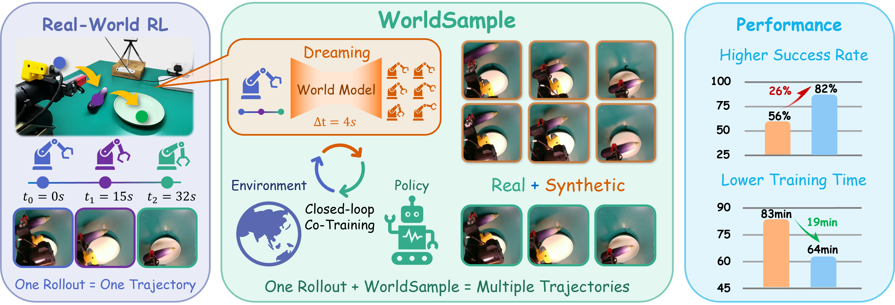
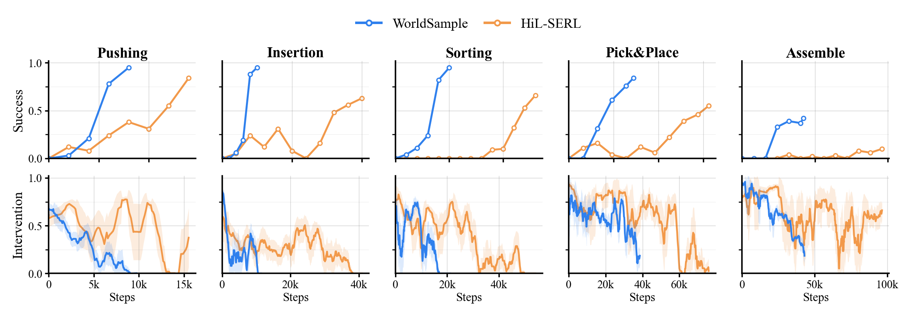

WorldSample: Closed-loop Real-robot RL with World Modelling
A physically grounded world-model augmentation framework that turns scarce physical rollouts into useful synthetic experience—without replacing real robot interaction.
Yuquan Xue1,
Le Xu2,
Zeyi Liu3,1,
Zhenyu Wu4,
Zhengyi Gu1,
Xinyang Song1,
Bofang Jia1, and
Ziwei Wang1†
1PINELab, Nanyang Technological University 2Tsinghua University 3Central South University 4Beijing University of Posts and Telecommunications
Real-robot tasks from the WorldSample evaluation suite.
82%average final success rate vs. 56% with HiL-SERL
59%fewer real training steps 23K vs. 56K on average
29.89dual-view model PSNR 0.925 SSIM after adaptation
The problem
Every physical rollout is expensive. It should yield more than one trajectory.
Real-world reinforcement learning can improve beyond the coverage of demonstrations, but robot interaction is slow, costly, and only reveals one realized action-outcome path at a time.
WorldSample keeps physical rollouts as the anchor of learning. A task-adapted action-conditioned world model expands each rollout into locally counterfactual, reward-labelled trajectories, while Policy-Paced Learning admits synthetic data only when it is useful and safe for the learner.

Method
A real-synthetic loop, paced by the policy.
WorldSample combines task-grounded generation with explicit controls over which synthetic experience is used and when it enters RL training.
Physical rollout data continually grounds world-model adaptation and policy improvement.
01 · REAL-SYNTHETIC DATA LOOP
Generate around what the robot actually experienced.
Real rollout segments seed locally perturbed, counterfactual action sequences. The post-trained world model predicts their futures and a reward model labels the resulting synthetic trajectories.
Task-adapted video world model
Counterfactual trajectory generation
Asynchronous generation and fine-tuning
02 · POLICY-PACED LEARNING
Trust synthetic data in proportion to policy readiness.
PPL balances generated successes and failures to stabilize critic values, then schedules the synthetic ratio from policy uncertainty on real robot states.
Q-aware sample selection
Uncertainty-guided data scheduling
Maximum synthetic ratio capped at 30%
Real-robot results
Higher success with less physical interaction.
Across five manipulation tasks, WorldSample improves on the human-in-the-loop baseline while converging with substantially fewer real training steps.

Success and intervention rate during online training. Blue: WorldSample; orange: HiL-SERL.
Method
Pushing
Insertion
Sorting
Pick & Place
Assembly
Average
VLAW
86%
47%
78%
76%
32%
64%
WMPO
90%
82%
72%
78%
23%
69%
HiL-SERL
84%
63%
66%
55%
10%
56%
WorldSample
95%
95%
95%
84%
42%
82%
Success rate from Table 1 of the preprint. WorldSample uses 8K / 10K / 20K / 36K / 40K real training steps across the five tasks.
Side-view rollouts
Compare reality with the generated future.
Each pair is conditioned on the same task setting. Select a task to inspect the physical rollout beside its world-model-generated counterpart.
PushingPress bread into a toaster by executing contact-rich object displacement.
PHYSICALREAL ROLLOUT
→same task context
SYNTHETICWORLD-MODEL ROLLOUT
Experimental setting
Five task categories. One real-robot platform.
We evaluate on a Galaxea A1X robot arm with a binary gripper, using side-view and wrist-mounted Intel RealSense D435i cameras. The tasks cover contact-rich interaction, precision alignment, visual discrimination, grasping, and long-horizon assembly.
@article{worldsample2026,
title = {WorldSample: Closed-loop Real-robot RL with World Modelling},
author = {Xue, Yuquan and Xu, Le and Liu, Zeyi and Wu, Zhenyu and
Gu, Zhengyi and Song, Xinyang and Jia, Bofang and Wang, Ziwei},
journal = {Preprint},
year = {2026},
month = jun
}